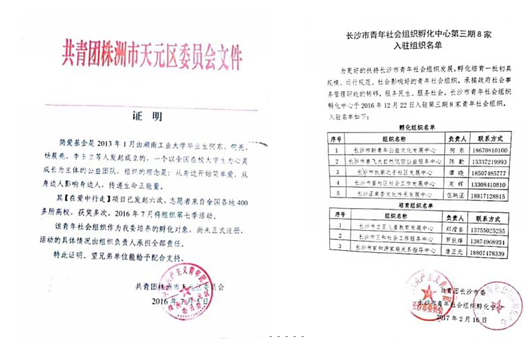
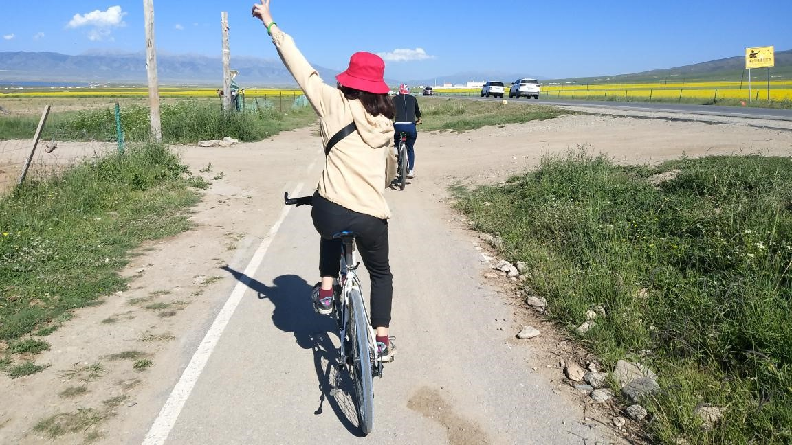
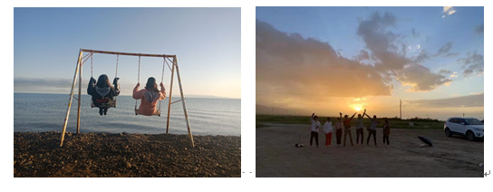

引言： 想请问大家，今年的暑假有什么安排呢？是看电视剧还是打王者荣耀呢？有 没有想过在今年的暑假去做一件轰轰烈烈的事情，有没有想过和 300 个来自全 国各高校的小伙伴一起去大西北，去西藏，结识一群铭记一辈子的朋友。你有没 有想过和 300 个人陪你一起在沙漠露营，看最漂亮的银河。你有没有想过 300 个人陪你一起沿着青海湖徒步看油菜花。你有没有想过 300 个人陪你一起燃起 篝火，跳起舞蹈，浪迹天涯。 如果大家想让自己的暑假过得有意义，可以加入到我们的活动咨询群了解详 细的信息。加群不会对大家造成任何影响，不喜欢可以随时退出。对于这个活动， 大家有什么问题的话，可以在我们的咨询群中提出来中，我们会进行一一答疑。
——第13季在爱中行走青海湖小组活动
——第13季在爱中行走青海湖的篝火晚会
回顾在爱中行走第十三季：
这是我们整个项目的行走路线以及时间的安排，乍一眼看是不是觉得很远。我记得有个人说过一句话：一个人可以走的很快，但是一群人可以走的更远！
我们的活动得到了共青团天元区委员会、共青团长沙市委员会的大力支持，大家可以放心地参加我们的活动。并且在前期活动中，有任何的不满意，可以随时退出，对大家没有一点影响！

第一站：西安---大明宫国家遗址公园
记得那时7月14日，早早的，义工、组委们就已经在西安火车站、高铁站等待我们的志愿者，大批志愿者集结在西安火车站附近，在义工的带领下志愿者来到了我们的营地------大明宫国家遗址公园附近。
当天晚上，我们进行了第13季在爱中行走的开营仪式，并开始了我们第13季的项目。吃了西瓜，喝了瓜皮！！！
7月15日开始了我们第一天的活动：全程搜索
各小组经过团队的配合，以最快的速度在西安市区进行活动闯关，用时最短即为冠军！
下图1为：志愿者们在全程搜索的过程中乘搭地铁
下图2为：志愿者们在闯关成功后，脚不沾地拍摄的图片
7月16日开始了我们第二天的活动：商战
志愿者们购买一些物资，然后进行售卖，把赚到的钱全部亲手捐赠到甘肃会宁贫困地区的孩子的手上！虽然这个过程很累很苦，但是我们还是坚持下来了！
——志愿者在小雨中的大雁塔进行宣传
——为热心的市民为我们的项目进行集资
下图为志愿者们在活动的过程中遇到了正在进行社会实践的西安理工大学的学生一起的合照
7月17日开始了我们第三天的活动：文化探索
志愿者们自由活动，在西安城内的进行文化探索。有大明宫遗址公园、有大雁塔、有回民街、有大唐不夜城、还有厚厚城墙，最重要的是还有兵马俑，来西安看一次兵马俑，不枉此行！
7月18日，开始去我们的第二站，方式：徒搭
可能大家对徒搭还不了解，徒搭是什么。简单来说就是徒步搭车，让热心且顺路的市民带着我们一起走，我们就在西安高速路口进行徒搭，体验一次搭陌生人的车，前往下一个营地---宝鸡。并且，徒搭不是要给钱的。
我们把我们这个项目跟司机说明，我们是去贫困地区捐助小孩子的，很多热心的司机都很乐意让我们徒搭。每一批，徒搭成功率都很高。
第二站：宝鸡---西府老街
我们到了营地之后，各组成员自己把自己的行李放到指定地点，开始欣赏西府老街的美食！西府老街美食文化历史悠久，各种各样的美食不胜其属，有肉夹馍、好吃的面条、以及各种各样的小吃！
7月19日，我们参加了另一个游玩的活动，探索了宝鸡市的历史以及风景。下图为在宝鸡市拍的图片。
7月20日，我们离开西府老街营地，前往下一个营地！ 方式有火车，有汽车。 但是有想象过火车连续几节车厢都被我们的队伍占领之后，路人的想法吗？几百号人，全部背着行李背包，前往下一个营地！
第三站：甘肃会宁---翟家所小学
这第三站也是我们这个项目的最重要的一个点，在这里我们把我们之前通过前期募捐以及在西安商战赚的钱，在这里可以把它们全部亲手捐赠给我们贫困地区的小朋友。
我们这次的营地在一所小学里面，在这里的这几天，我确实这所小学是这个地区最好的一个地方，不仅有篮球场、还有足球场、羽毛球场、乒乓球场。
但是到了晚上，就更美了。在这里，你能看到整个银河系内大多数星星呀，这是在株洲所看不到的，hi hi..... 左边是星轨，右边是星系
7月21日，开始了我们来参加活动最重要的一项任务，亲自去小朋友家查看情况并对其进行捐款。 下图为去小朋友家的路上，这些美丽的地貌，都是大家在湖南看不到的，有机会一定要去看看哦！
在小朋友家，热情的家长给我们准备了午饭，这是在小朋友家吃饭的图片，由于保护一下小朋友的隐私，所以就没有放小朋友的正脸照片。
7月22日，我们白天自由活动，这里有红军长征胜利景园等一些红色景区，还有些啥忘了，哈哈！ 由于这边缺水，在营地没地方洗澡，我们小组就跑到镇上的旅馆开了一间大房间，洗了洗澡，玩了玩游戏。吃了好几天北方的食物有点不习惯，我们还找了家湘菜馆做了几个小菜，开开小灶，还有奶茶！
第四站：甘肃兰州某一所大学校园
9月21日下午，我们来到了甘肃兰州的某一所大学，叫啥我是真的忘了，嘿嘿！我们搭好帐篷，组委领队给我们介绍这边的情况跟注意事项！
第五站：西宁煌乐公园
7月25日，我们来到了西宁煌乐公园，在一个农家乐里面住了一晚，吃吃喝喝，第二天，7月26日前往下一个营地，青海湖！
第六站：青海湖
7月26日，我们来到了我们的终点营地，青海湖。
多么神圣的一个地方，有多少人向往着过来却从未来过。
志愿者们的环湖骑行
———路旁的羊驼，吸引了前来的旅游的游客。
———早上的日出也甚是美妙，吸引着无数小可爱们早期看日出，芮苒很冷，但还是很开心。
还有篝火晚会，一群来自全国各地的小伙伴围在一起，吃着零食，喝着酒竟是逍遥自在。 我们的篝火晚会还活动吸引了当地众多的游客跟人们，使得他们也加入到了我们的行列之中，一起围着篝火唱歌跳舞。
在青海湖活动了3天后，我们于8月29日的一场结营仪式结束了我们青海2批的行走活动，在这之后大家各奔东西。
离别与重逢，是人生不停上演的戏，习惯了，也就不再悲怆。
到了青海，怎么能不去西藏走一圈！西藏的布达拉宫可是出了名的，去一次，真的不枉此行了！
看完了是不是觉得很心动，有想去大西北的冲动。虽然我们这次去的是海南，同样，海南也许多值得我们去探索的美食跟美景，我们要有一双善于发现的眼睛。
我想你是个不安分的人，就像跳动不停的火苗
我喜欢你，是因为我们都一样
在这个享尽繁华的世界
我们无法明白孤独的真正定义
就要我们在这个哭哭笑笑的世界里
好好珍惜自己
第十四季，我们从心出发
遇见你，也遇见回忆
文案:Let's try开发社-----陈杰
网页制作:Let's try开发社-----余乐